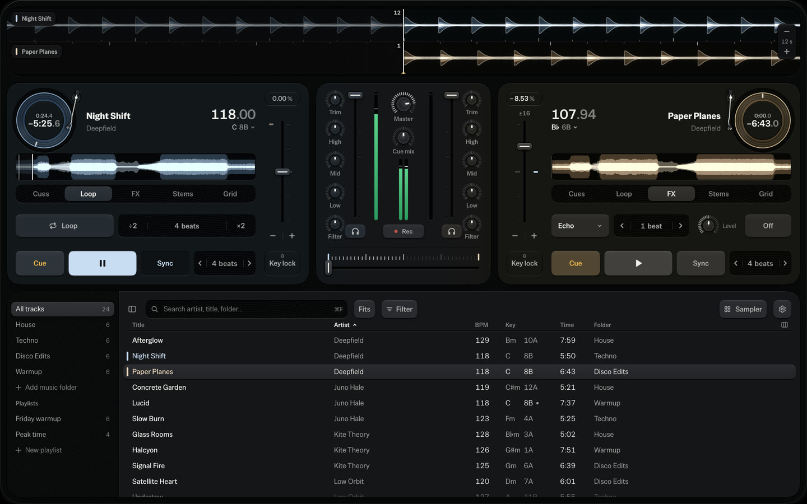

Interlude
A free, open-source DJ app for the Mac.

Install
-
01
Download
Get Interlude.dmg, open it, and drag Interlude into Applications.
-
02
Open it
Open Interlude from Applications or Spotlight.
-
03
Add your music
Click + Add music folder, or bring your library over from Rekordbox or Serato with File › Import. Plug in your controller and it connects by itself.
After that, Interlude keeps itself up to date.
Features
Decks
- BPM, beatgrid and key found on load
- Sync that matches tempo and phase
- 8 hot cues, beat loops and beat jump
- Slip mode, quantize and key lock
- Scrolling waveforms in three bands
Mixer and effects
- 3-band EQ with full kills, trim and filter
- Echo, reverb, flanger and phaser, timed to the beat
- Auto gain, so every track starts level
- A master limiter that never clips
- Headphone cue with a cue/master blend
Stems
- Vocals, melody, bass and drums on every deck
- Split on your Mac, nothing uploaded
- Mute any stem live, on screen or from the pads
Library
- Instant search across your whole collection
- Playlists and a history of every set
- Import from Rekordbox and Serato, cues included
- MP3, AAC, FLAC, WAV, AIFF, OGG and ALAC
Controllers
- Pioneer DDJ-FLX4 mapped in full
- 140+ more through bundled Mixxx mappings
- MIDI learn for anything else
Recording and more
- Record your set to WAV in one click
- A sampler with eight one-shot slots
- Every shortcut can be remapped
- Report a problem from the Help menu
FAQ
Is it really free?
Yes. There's no pro tier, no account and no subscription. Interlude is open source under the GPL, so anyone can read, change and share the code.
Does it work on Windows, Linux or Intel Macs?
Not yet. The beta is for Macs with Apple silicon (M1 and later). Other platforms are on the roadmap.
Will my controller work?
The Pioneer DDJ-FLX4 is fully mapped. Interlude also reads Mixxx mapping files and ships with more than 140 of them, so most popular controllers connect on their own. If yours doesn't, Settings › Controllers lets you map it with MIDI learn.
Does it change my music files?
No. Cues, beatgrids and playlists are kept in Interlude's own library. Your files are only read.
How do I report a bug?
Choose Help › Report a Problem. Interlude saves a report with what you describe, the app's logs and your system (no music) to your Desktop, ready to send. You can also open an issue.